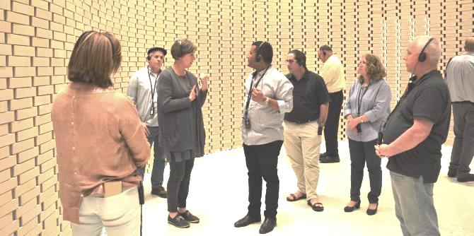
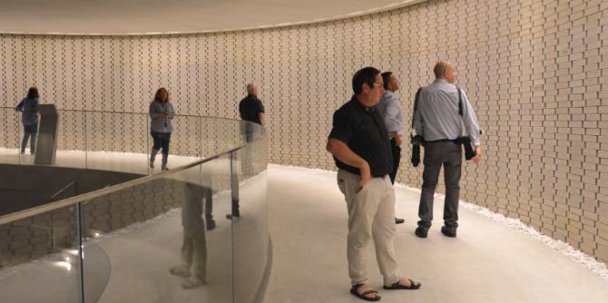

The Mandel Graduate Unit’s “Graduates Host” series enables Mandel graduates to learn from the extensive professional, ideational, and entrepreneurial expertise of the other members of the community. In each session, a graduate hosts other graduates of the Mandel School for Educational Leadership on a site visit and discusses an interesting professional issue with them.
The subject of memory and commemoration is of concern to leaders and educators who seek to build collective identity, develop historical narratives, and shape heritage in general, and memory heritage in particular. It also has relevance for curriculum design and for the planning of events and ceremonies.
On March 19, 2018,
Yair Ben-Shalom, director of the National Hall of Remembrance for Israel’s Fallen Soldiers and a graduate of Cohort 21 of the Mandel School for Educational Leadership, hosted graduates at his workplace and told them about his extensive efforts on behalf of the Hall.

Located at the entrance to the Mount Herzl military cemetery, the National Hall of Remembrance opened in October 2017. The site, which lists the names of all of Israel’s fallen soldiers – over 23,000 names – offers a new and unique approach to commemoration, which is expressed in the building’s architectural structure and internal design, and in the content it presents. Yair Ben-Shalom is the Hall's first director, and was involved in developing the site’s philosophy and approach. His tour presented the professional and educational challenges involved in developing and managing the memorial, as well as the methods and means that express its commemorative approach.
Next, the graduates heard a lecture by Professor Vered Vinitzky-Seroussi, of the Hebrew University of Jerusalem’s department of sociology and anthropology and Yale University's Center for Cultural Sociology. Professor Vinitzky-Seroussi is a scholar of collective memory and commemoration in Israel and around the world, and is an expert on the ways in which societies cope with their difficult pasts. She spoke about “Creating Collective Memory,” which she presented as a dynamic process in which the components that dictate the design and reinforcement of collective memory need constant management.
At the end of the visit, the graduates discussed educational and leadership issues related to creating and preserving memory, in the context of their own professional experience. This discussion was held at Café Shalva, a social enterprise promoting inclusion, and was led by
Rakefet Mossek, the consultations manager of the Mandel Graduate Unit.

{kind=link}
{kind=link}